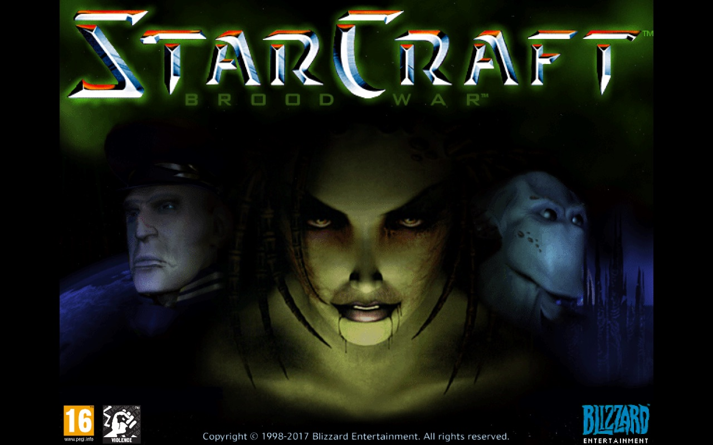
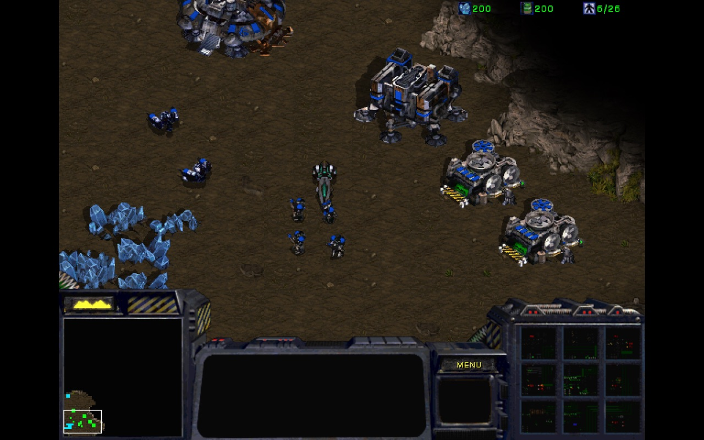

28 stycznia 2018
Tak się złożyło, że dzisiejszą niedzielę spędzam głównie w powietrzu, kilkanaście kilometrów nad ziemią – trzy loty w ciągu dziewięciu godzin. Dawno nie grałem na komputerze, więc postanowiłem nadrobić zaległości i ponownie przejść pierwszego StarCrafta. Tym razem wersję HD, którą kupiłem od Blizzarda w dniu premiery. Nawet ją wtedy zainstalowałem, włączyłem i przeszedłem ze 2-3 misje kampanii Terran. Z jakiegoś powodu gra poszła jednak w odstawkę.

Dziś postanowiłem wrócić do, nie bójmy się użyć tego stwierdzenia, RTS-a wszechczasów. Przed wylotem upewniłem się, że gra jest zainstalowana, ma najnowsze patche, baaa… zabrałem nawet myszkę. Samolot wzbił się w powietrze, kapitan zgasił sygnalizację zapięcia pasów, sięgam więc do podręcznej walizki po komputer. Po uruchomieniu klient battle.net marudzi, że nie może się połączyć z serwerami, ale nic sobie z tego nie robię, bo przecież mam zamiar zagrać w kampanię single player.
Najgorsze jednak dopiero miało nastąpić. Uruchamiam StarCrafta i moim oczom ukazuje się ekran ładowania. W pierwszej chwili nie zauważyłem niskiej rozdzielczości i czarnych pasków po bokach ekranu, spowodowanych proporcjami 4:3 na panoramicznym LCD laptopa. Dopiero po wczytaniu ostatniego stanu gry, gdy załadowała się właściwa rozgrywka, zorientowałem się, że coś jest nie tak. Gra uruchomiła się w wersji klasycznej, z grafiką sprzed 20 lat. Dziwne, bo jeszcze wczoraj wszystko działało w trybie HD. Ale myślę sobie spoko… pamiętam przecież, że gdzieś w ustawieniach można było przełączyć wajchę, by to zmienić. Wchodzę w opcje Video i owszem, checkbox "HD Graphics" jest, ale odznaczony i nieaktywny.
Cóż Blizzard naprawdę za każdym razem chce sprawdzić, czy aby na pewno zakupiłem wersję HD za te marne 15 euro. Bo, chyba z lenistwa, przygotowali jeden build dla obu edycji i gdyby nie było za każdym razem weryfikacji online, to ktoś bardziej ogarnięty w grzebaniu we wnętrznościach aplikacji mógłby znaleźć sposób na odblokowanie płatnego contentu podmieniając parę wartości w rejestrze lub w plikach gry. Niby mogłem kontynuować zabawę. StarCraft zestarzał się, ale nie aż tak strasznie. Ale nie po to płaciłem wcześniej, żeby teraz grać w darmową wersję. A poza tym kilkanaście lat temu już tę grę przeszedłem.

Przesiadka na lotnisku, darmowe WiFi, szybki rzut oka na bibliotekę Steama, może coś uda się ściągnąć przed następnym lotem. Jest! Kolejny tytuł z "kupki wstydu", czyli pierwszy Half-Life. Odpalam ściąganie i tutaj następuje kolejne zderzenie ze szklaną ścianą. Niby wszystko działa, niby internet chodzi jak należy podczas przeglądania stron, ale prędkość pobierania w porywach osiąga 100 kB/s. Niby mam jeszcze telefon z LTE, gdzie mógłbym udostępnić połączenie. Ale zapewne pakietu danych by mi nie wystarczyło a za transfer bym zapłacił drugie tyle, co już wydałem na grę.
Od dawna wolałem edycje pudełkowe niż cyfrę. W sumie nie wiedziałem dlaczego, może z sentymentu, może to kwestia zamiłowań kolekcjonerskich. Od dzisiaj przynajmniej wiem z jakiego powodu tęsknię za czasami, które niestety chyba już nie wrócą. Dawniej mogliśmy grać w to co chcieliśmy i kiedy chcieliśmy. Dziś musimy brać pod uwagę widzimisię producentów i wydawców. 10 lat temu latając samolotem byłem zdecydowanie lepiej przygotowany. Nie miałem Steama, jedyne gry wymagające połączenia z internetem, które posiadałem to WoW i Guild Wars, ale ciężko grać w MMO offline. Zaś przed każdą podróżą, jak chciałem w coś pograć, to instalowałem wszystko z płyty i nawet w najgorszych koszmarach nie śniło mi się, o dzisiejszych problemach pierwszego świata.